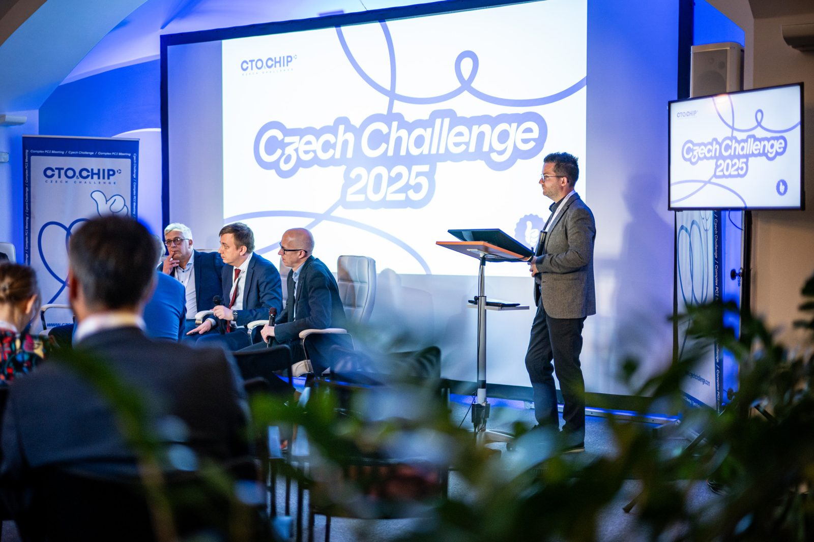

About the meeting
Science, sharing and friendship – third time in Pardubice.
After two successful editions, the CTO&CHIP Czech Challenge returns for its third year as an international meeting that brings together leading experts and colleagues from across Europe and beyond.
Vol. 3 will once again combine live cases, focused sessions and open discussion with the spirit of collaboration and friendship that has defined the meeting from the start. New this year: a quick debate – multiple views on the road to becoming a CTO & CHIP operator.
We'll start together with a welcome dinner on October 22, followed by a full day of live cases, lectures, debate and shared learning on October 23, 2026. And it's a meeting for the whole cath lab team – live cases are a team effort, and so is this day.
- Live cases
- Czech & 20+ international faculty
- Quick debate
- Whole cath lab team
- One day, one room
Course directors & team
Scientific committee
Program
Four sessions, live cases and one debate.
Working draft – speakers and exact times will follow with the final program.
Faculty
Operators you know from the big stages – sitting next to you.
Czech & 20+ international faculty
Venue
One hall, one room, an aeroplane overhead.
Everything happens in a single hall in the centre of Pardubice – lectures, live cases and the coffee in between. No parallel tracks, no running between buildings.
Previous editions
What it looked like in 2024 and 2025.
Real cath lab, real audience, real discussion. Photos by Lukáš Kaboň.

Partners
This wouldn't be possible without you.
Under the patronage of
Interest & contact
Not invited yet? Tell us you're interested.
This year's meeting is by invitation. Tell us you're interested and we'll keep you in the loop for the coming editions.